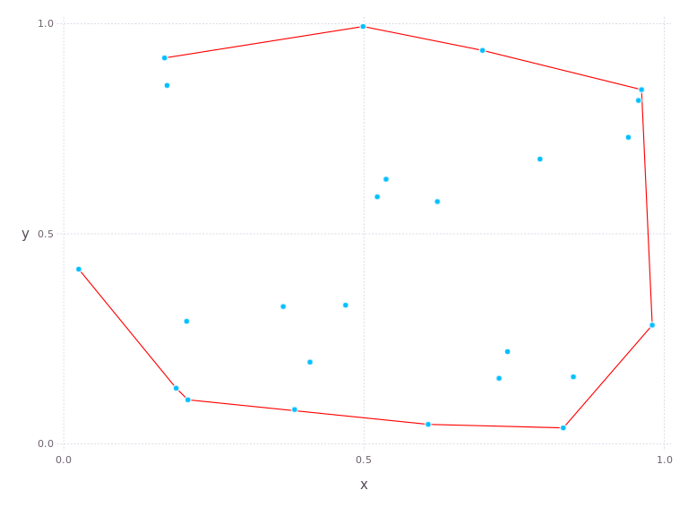

The QuickHull package
QuickHull is a naïve implementation of the QuickHull algorithm for calculating the convex hull of a set of points in 2D.

Usage
The algorithm works with Vec{2}s from FixedSizeArrays, so you can pass a vector of such points directly to the algorithm:
using FixedSizeArrays
points = map(Vec, rand(25), rand(25))
using QuickHull
hull = qhull(points)
9-element Array{FixedSizeArrays.Vec{2,Float64},1}:
Vec(0.0445592,0.422049)
Vec(0.0737183,0.200821)
Vec(0.94896,0.0126141)
Vec(0.940277,0.447764)
Vec(0.896801,0.651625)
Vec(0.740087,0.790612)
Vec(0.578067,0.911319)
Vec(0.202189,0.883451)
Vec(0.0822194,0.709138)
The points are returned in order, starting with the leftmost point and moving counter-clockwise around convex hull.
You can also just pass two arrays of equal length containing the $x$ and $y$ values of your points, and qhull will figure it out:
xs, ys = rand(25), rand(25)
using QuickHull
xhull, yhull = qhull(xs, ys)
([0.0925269,0.194925,0.951341,0.983595,0.996197,0.991522,0.985222,0.318462,0.169771],[0.480565,0.130644,0.0981057,0.145279,0.600154,0.857333,0.978437,0.83802,0.672231])
As you notice, the format of the return values matches that of the input.